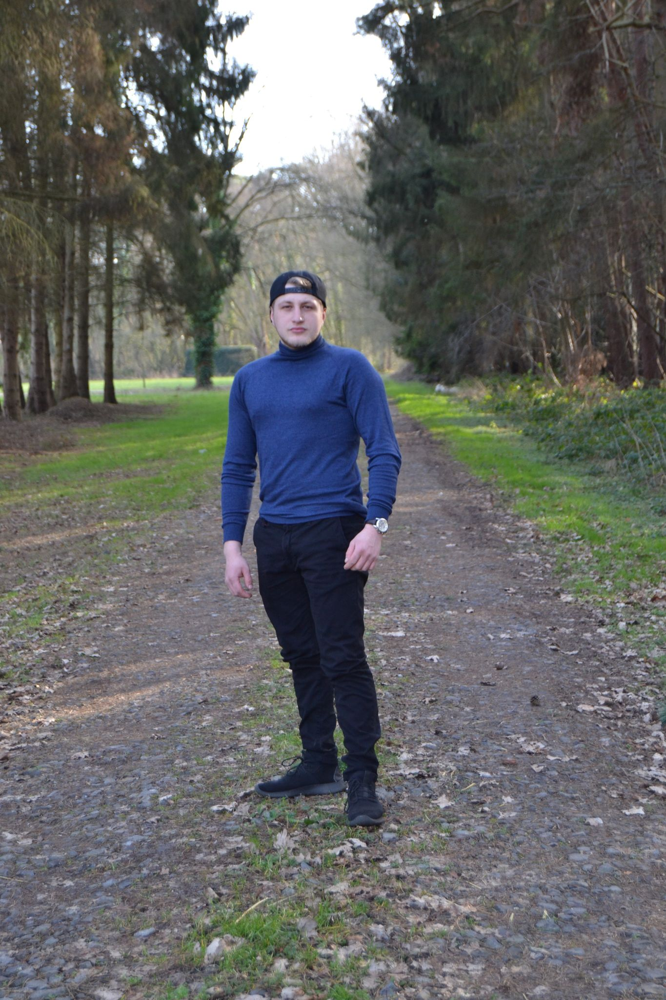

About Me
Ik ben Daniel Stanciu, geboren op 30/09/1997.
Ik heb voor deze opleiding gekozen omdat het mij hard aanstaat. Heb al veel ervaring met computer software/hardware. Ik wil graag als software developer afstuderen omdat het echt iets voor mij is .In het secundair ben ik afgestudeert als Kantoor/Organisatiehulp EHBO en heb dus al veel informatica gekregen op school
Het is voor mij een droom om veel te weten over technologie en software en de evolutie van de technologie.

Mijn Vakken
Statische website
Programmeren
Datamodellering
Proffesionele ontwikkeling
It Essentials